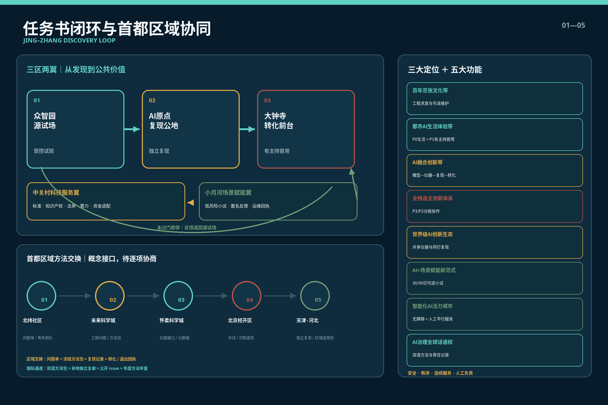
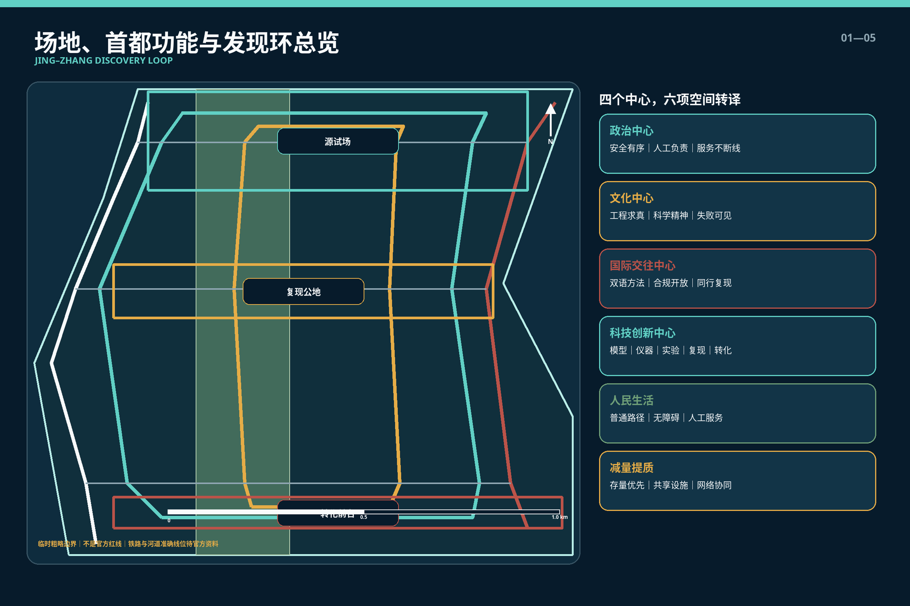
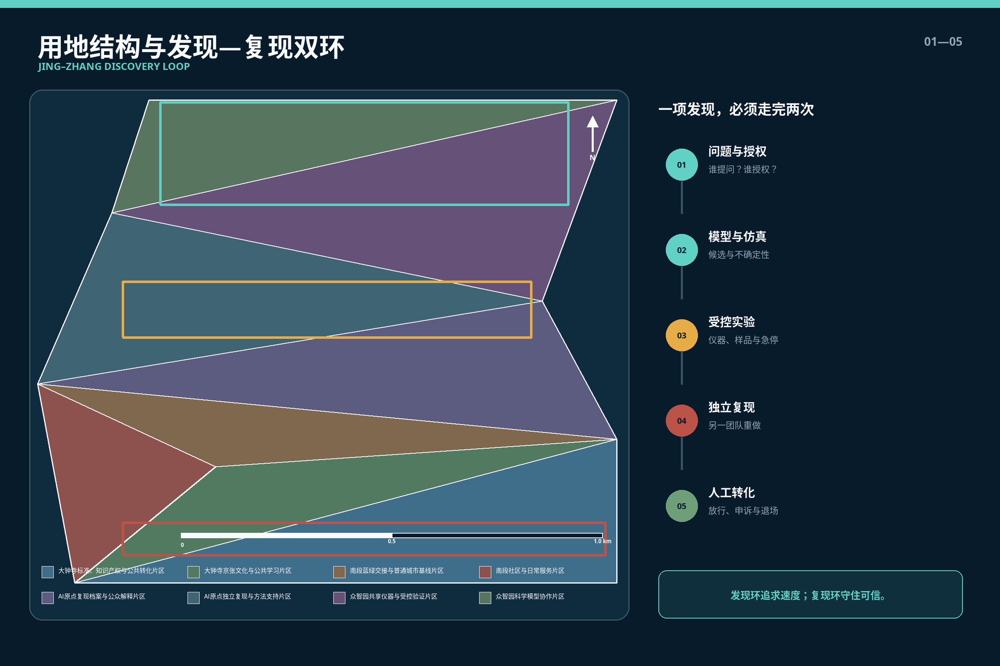
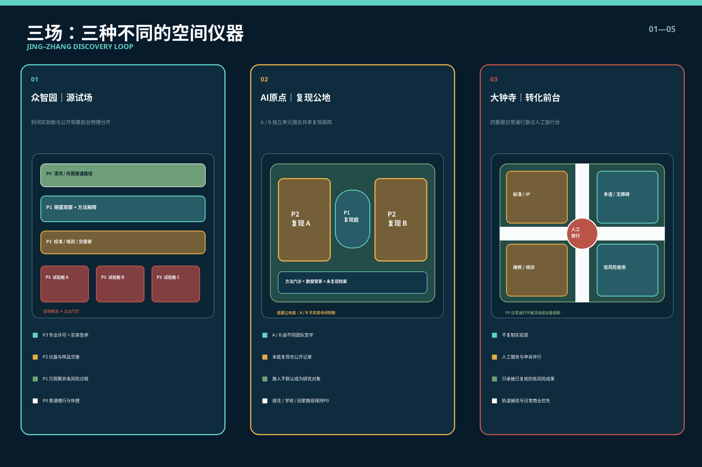
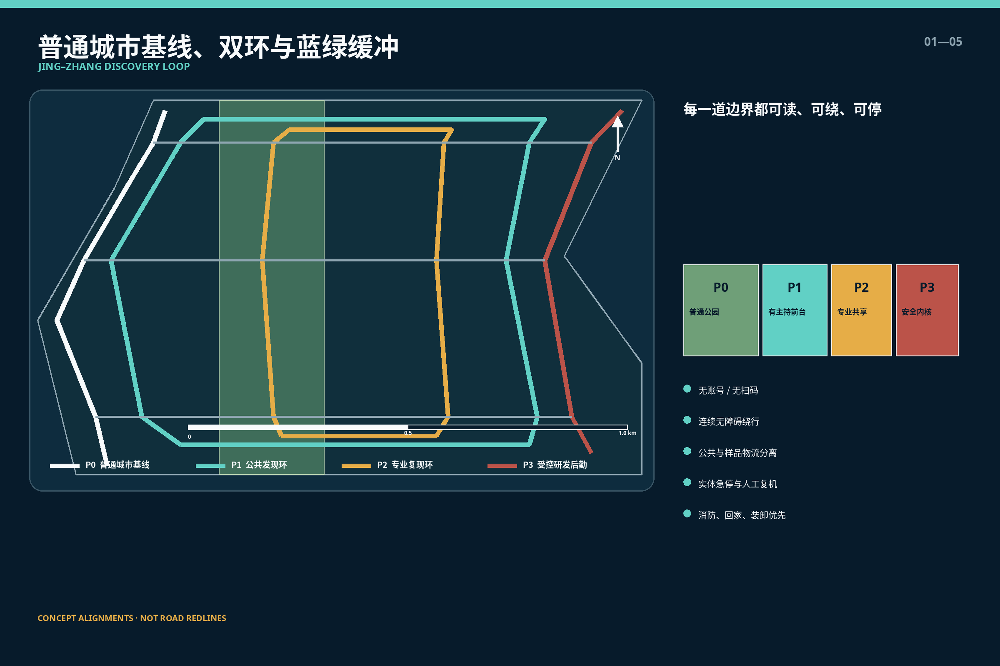
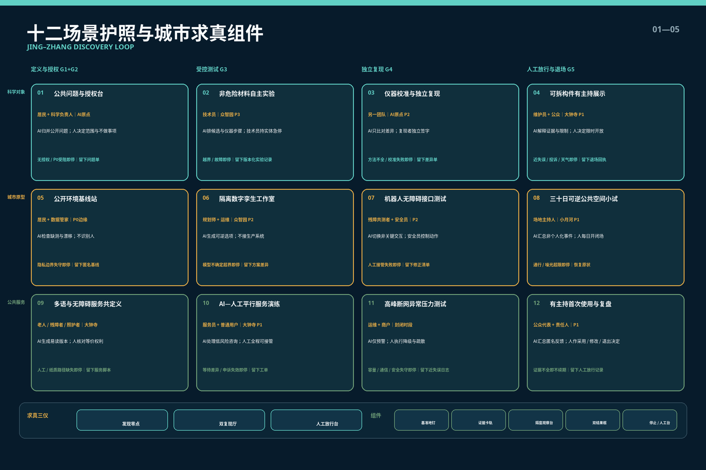
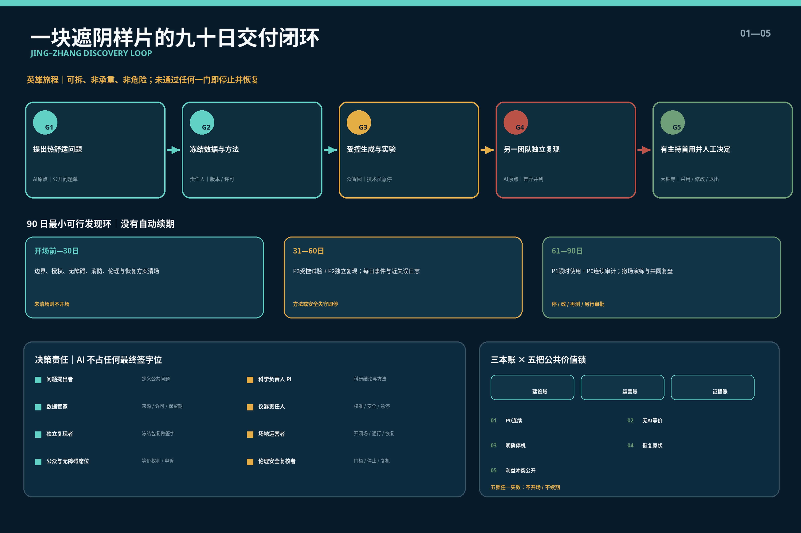
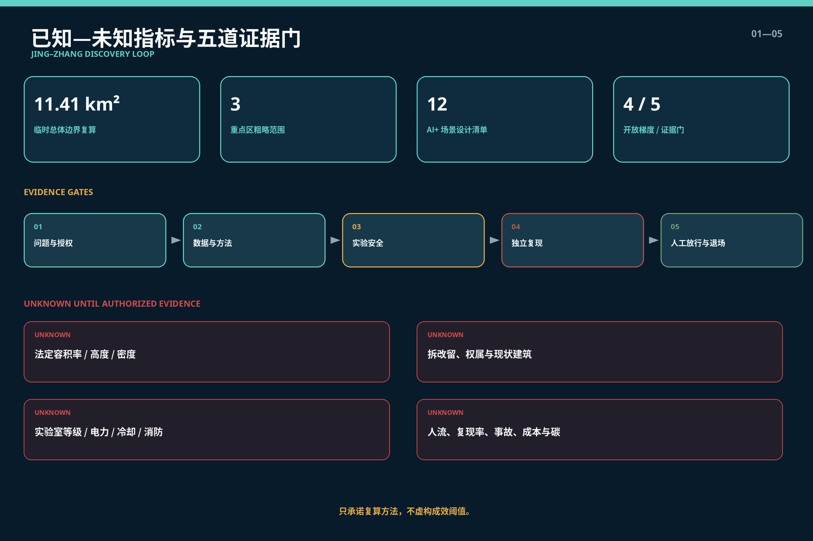

公共问题与授权台
居民 + 科学负责人｜AI原点
AI归并公开问题；人决定范围与不做事项
无授权 / P0受阻即停｜留下问题单
一项科学智能成果只有经过授权、受控试验、独立复现和人工放行，才可能限时进入城市；普通生活始终拥有不参与的权利。
AI可检索、生成候选、仿真和提示异常；不能独立批准实验、判定科研结论或决定公共服务准入。








每张护照都明确谁、在哪、AI做什么、人负责什么、何时停止以及留下什么。
居民 + 科学负责人｜AI原点
AI归并公开问题；人决定范围与不做事项
无授权 / P0受阻即停｜留下问题单
技术员｜众智园 P3
AI排候选与仪器步骤；技术员持实体急停
越界 / 故障即停｜留下版本化实验记录
另一团队｜AI原点 P2
AI只比对差异；复现者独立签字
方法不全 / 校准失败即停｜留下差异单
维护员 + 公众｜大钟寺 P1
AI解释证据与限制；人决定限时开放
近失误 / 投诉 / 天气即停｜留下退场回执
居民 + 数据管家｜P0边缘
AI检查缺测与漂移；不识别人
隐私边界失守即停｜留下匿名基线
规划师 + 运维｜众智园 P2
AI生成可逆选项；不接生产系统
模型不确定超界即停｜留下方案差异
残障共测者 + 安全员｜P2
AI切换非关键交互；安全员控制动作
人工接管失败即停｜留下修正清单
场地主持人｜小月河 P1
AI汇总非个人化事件；人每日开闭场
通行 / 噪光超限即停｜恢复原状
老人 / 残障者 / 照护者｜大钟寺
AI生成易读版本；人核对等价权利
人工 / 纸质路径缺失即停｜留下服务脚本
服务员 + 普通用户｜大钟寺 P1
AI处理低风险咨询；人工全程可接管
等待差异 / 申诉失效即停｜留下工单
运维 + 商户｜封闭时段
AI仅预警；人执行降级与疏散
容量 / 通信 / 安全失守即停｜留下近失误日志
公众代表 + 责任人｜P1
AI汇总匿名反馈；人作采用 / 修改 / 退出决定
证据不全即不续期｜留下人工放行记录
所有落位均基于 provisional geometry，不是官方红线或工程方案；不含敏感地点、安保范围或非公开系统。